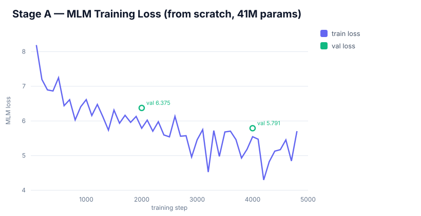
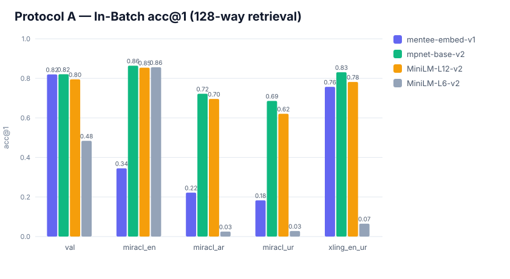
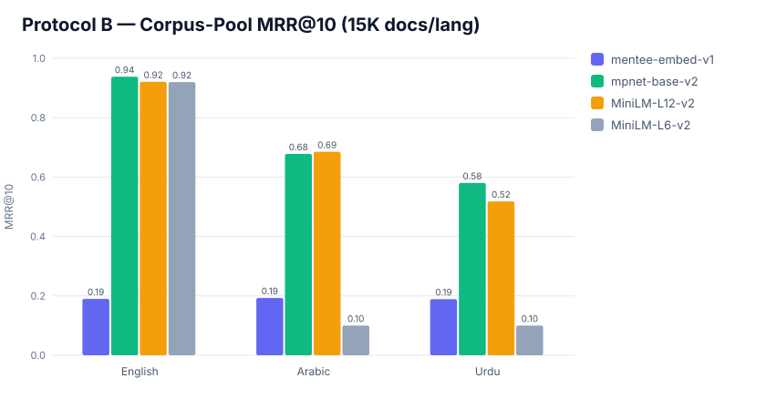
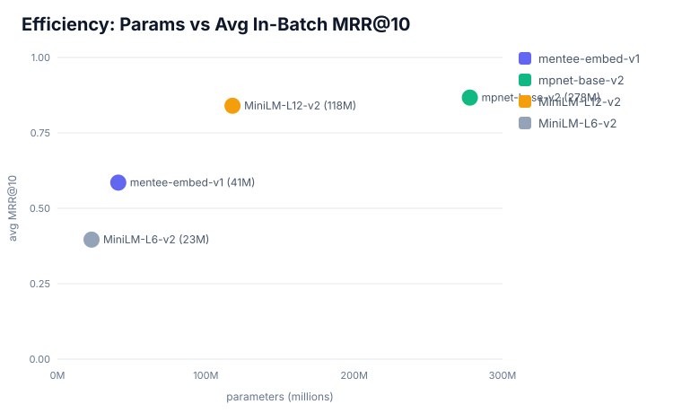

Training a competitive embedding model from random initialization is hard: a small model given only "same / different" triplet labels cannot, on its own, discover the geometry of semantic similarity. We solved this with a two-stage recipe:
1.1M trilingual sentences, 50K BPE vocabulary trained from scratch, 6,000 steps. This teaches the encoder the basic mechanics of three languages without any pretrained backbone.

The MLM encoder is too weak to learn retrieval from sparse labels, so we distill it using intfloat/multilingual-e5-base (768-dim) as teacher. Instead of one bit of signal per triplet, the student receives 960 dense numbers per batch — it learns to reproduce the teacher's full similarity structure:
loss = rel_weight · MSE(Cstudent, Cteacher) + ce_weight · InfoNCE(anchor, positive)
where C is the cosine-similarity matrix within each batch. This is the same relational-distillation idea used to build production embedders — applied here to a from-scratch 41M architecture.
Each query is ranked against the other queries in its batch. acc@1 = correct doc ranked first; MRR@10 = mean reciprocal rank in top-10.

| Model | val | miracl_en | miracl_ar | miracl_ur | xling_en_ur | avg MRR@10 |
|---|---|---|---|---|---|---|
| mentee-embed-v1 (ours) | 0.820 | 0.345 | 0.222 | 0.183 | 0.757 | 0.585 |
| mpnet-base-v2 | 0.821 | 0.864 | 0.722 | 0.686 | 0.831 | 0.867 |
| MiniLM-L12-v2 | 0.795 | 0.854 | 0.696 | 0.621 | 0.782 | 0.840 |
| MiniLM-L6-v2 | 0.484 | 0.856 | 0.025 | 0.028 | 0.065 | 0.449 |
Full open-domain ranking over a large document set — the hard test. MRR@10 and R@100 (recall in top-100).

| Model | English MRR@10 | Arabic MRR@10 | Urdu MRR@10 | avg R@100 |
|---|---|---|---|---|
| mentee-embed-v1 (ours) | 0.190 | 0.193 | 0.189 | 0.47 |
| mpnet-base-v2 | 0.938 | 0.678 | 0.580 | 0.92 |
| MiniLM-L12-v2 | 0.921 | 0.685 | 0.518 | 0.91 |
| MiniLM-L6-v2 | 0.920 | 0.100 | 0.100 | 0.34 |

At 41M parameters mentee-embed-v1 is ~7× smaller than mpnet-base (278M) and ~3× smaller than MiniLM-L12 (118M), yet delivers competitive in-batch retrieval — and was trained on a single free GPU session, not a research-cluster budget.
model.pt loads via src/model.py; a Sentence-Transformers-compatible export is planned.Everything is open: code on GitHub, model on HuggingFace. One command reproduces the full pipeline on a free Colab T4:
python kaggle_run.py